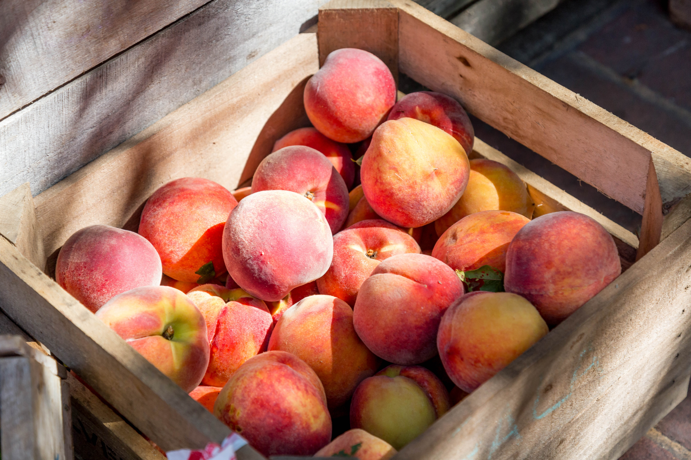
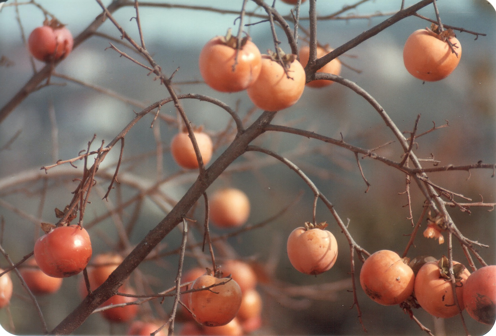

<h1>오월</h1>
<br><h2>3. 계절별 작물 소개</h2><br>
<h3>※봄※</h3>

<br><h4>매실, 앵두, 두릅나무 / 복사꽃, 배꽃</h4>
<br><h3>※여름※</h3>

<br><h4>복숭아, 살구, 자두, 호두, <strong><u>뽕나무</u></strong></h4>
<br><h3>※가을※</h3>

<br><h4>사과, 배, 감, 대추나무, 보리수</h4>
<br><h3>※겨울※</h3>

<br><h4>고로쇠나무</h4>
<br><p><a href="0.html">뒤로가기</a></P><br>
  <p>더 자세한 정보를 원하시면, 아래를 클릭해주세요^-^</p>
  <ol>
  <li><a href="1.html">오월소개</a></li><br>
  <li><a href="2.html">BUSINESS 비즈니스</a></li><br>
  <li><a href="3.html">계절별 작물 소개</a></li><br>
  <li><a href="4.html">전체 작물 소개</a></li><br>
